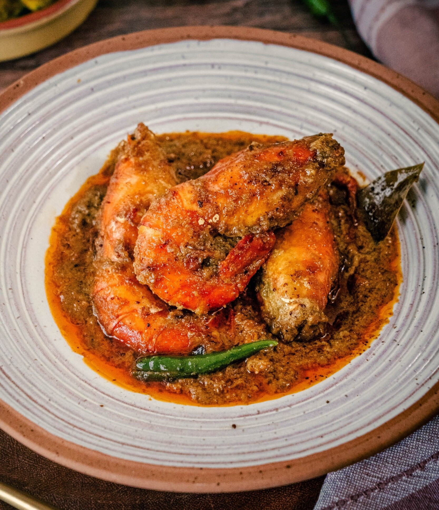

Prawn Malai Curry

About the dish:
Chingri malai curry or malai chingri, also known as prawn malai curry, is a Bengali curry made from tiger and king prawns and coconut milk and flavoured with spices. Originating from the Bengali speaking regions of Pre-partition 'Bangla', now West Bengal and Bangladesh, this delectably sweet and aromatic dish takes seafood to a whole new level.
Ingredients:
- 1 pound tiger prawns, peeled and deveined
- 2 tablespoons vegetable oil
- 4 whole cloves
- 4 green cardamom pods
- 2 pieces of stick cinnamon (1½ inches each)
- 1 onion, grated
- 1¼ teaspoons ginger paste
- 1¼ teaspoons garlic paste
- ½ teaspoon ground turmeric
- ¼ teaspoon cayenne pepper
- ½ cup finely chopped tomato
- ½ cup water
- 1 cup coconut milk
- 1 teaspoon ghee (clarified butter)
Steps:
- To prepare fresh garam masala, in a coffee grinder, grind cardamom seeds, 3 whole cloves, and 3 cinnamon sticks to a fine powder. Set aside.
- Heat vegetable oil in a skillet over medium heat. Add 4 whole cloves, 4 cardamom pods, and 2 sticks of cinnamon and fry for a few seconds (take care as cloves tend to pop out of the pan). Stir in grated onion and reduce the heat to medium-low. Cook and stir until liquid dries and onion no longer smells raw, about 5 minutes. Add ginger paste and garlic paste and cook for 2 minutes, stirring constantly.
- Stir in turmeric and cayenne pepper. Add chopped tomatoes and cook until tomatoes are soft, about 5 minutes. Pour in water, cover the pan, and cook for an additional 5 minutes.
- Pour in coconut milk and stir well. When mixture is just below boiling, stir in prawns. Sprinkle mixture with almost all of the fresh garam masala powder, reserving a pinch to use as a garnish. Gently stir to combine. Do not cover the pan at this stage, as coconut milk will curdle.
- As soon as prawns are pink and cooked through, 3 to 5 minutes, add ghee. Remove the pan from the heat. Sprinkle reserved garam masala over the dish and serve with rice or by itself.